AIブランド映像の作り方。
企画から納品までの全工程.
生成AIで映像をつくる時代に、ブランドの"らしさ"をどう保つか。企画・絵コンテ・プロンプト設計・編集・納品まで、AI NOWが実際に踏む全工程を、事例と比較表、コピペできるプロンプト付きで解説します。
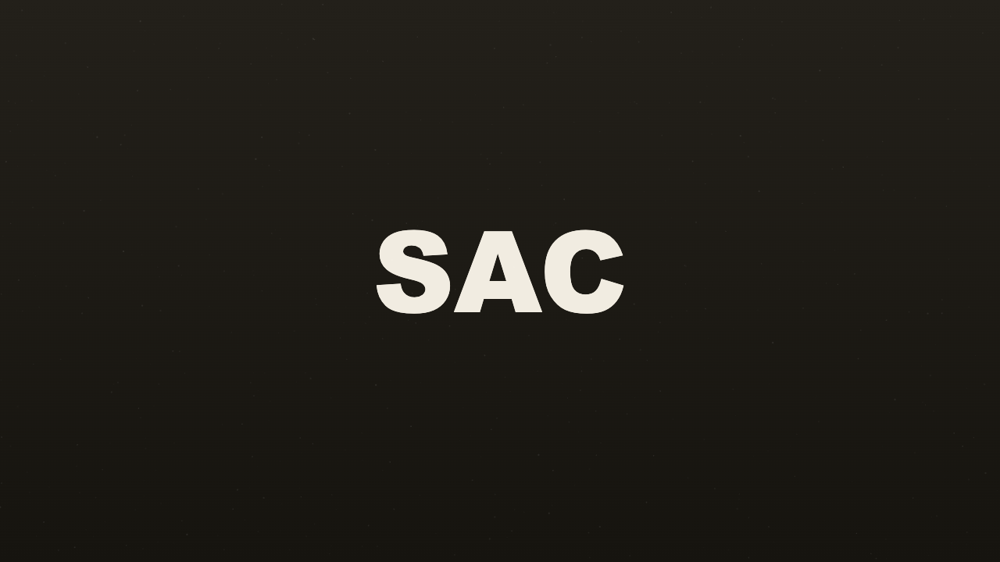
生成AIで映像をつくる時代に、ブランドの"らしさ"をどう保つか。企画・絵コンテ・プロンプト設計・編集・納品まで、AI NOWが実際に踏む全工程を、事例と比較表、コピペできるプロンプト付きで解説します。

AIブランド映像とは、生成AIを制作パイプラインに組み込みながら、ブランドの世界観を一貫した温度で表現する映像のこと。実写・CG・生成素材を横断し、従来なら数週間かかった工程を数日に圧縮します。
ただし、速くなった分だけ「何を伝えるか」の設計がより重要になります。関連記事でも、生成と人の手を行き来するハイブリッドな制作が増えています。
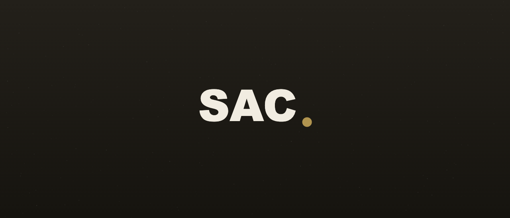
まずは大きな流れを押さえましょう。下の大画像はワークフローの全体像です。各工程は独立しておらず、行き来しながら磨き込んでいきます。
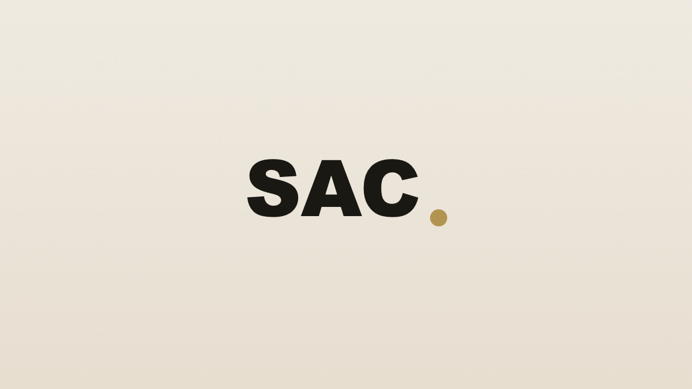
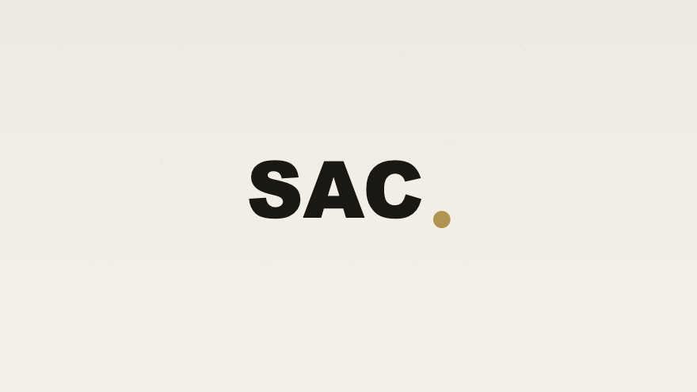
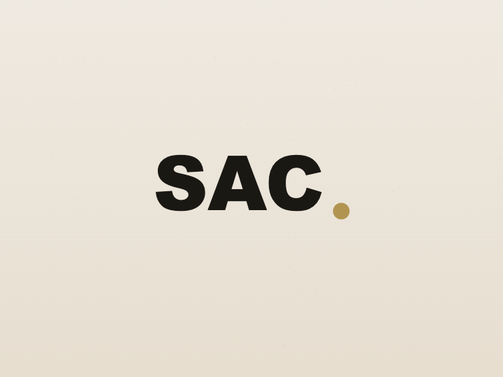
左寄せ中画像のテキスト回り込みサンプルです。製品カットや人物カットを本文の脇に置きたいときに使います。文章が画像の右側に自然に流れ込み、読みのリズムを保ったまま視覚情報を添えられます。
キャプションには撮影意図や条件を簡潔に。回り込みは段落2〜3つ分が読みやすさの目安です。
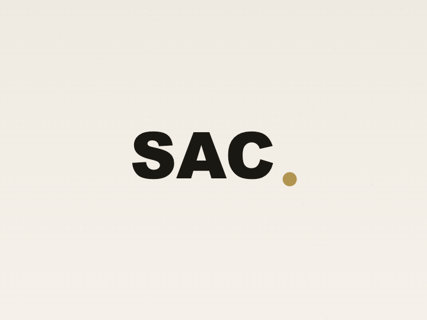
右寄せ版。左右を交互に使うとページに視覚的なリズムが生まれます。長い解説テキストに対して、根拠となるビジュアルを添える用途に向いています。
SP表示では自動的に画像が上、テキストが下の積み重ねに切り替わります。
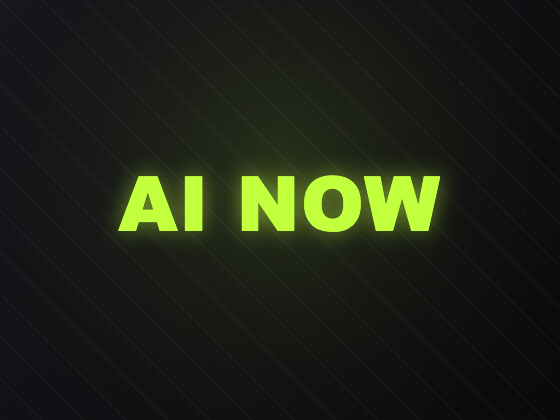
左にメッセージ、右にビジュアル。コンセプトの要点を、対応する画像とセットで提示できる2カラムモジュール。製品の特徴説明や、ビフォー／アフターの提示に有効です。
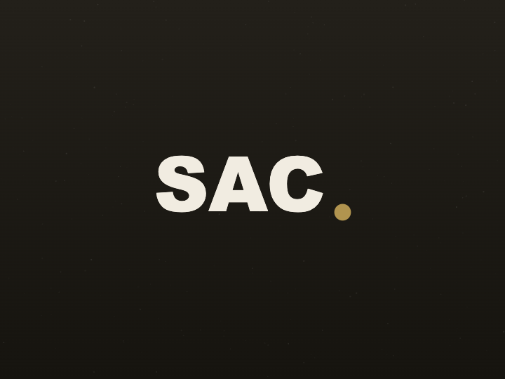
画像とテキストの位置を入れ替えた配置。連続して使うときは左右を交互にすると、単調にならず読み進めやすくなります。
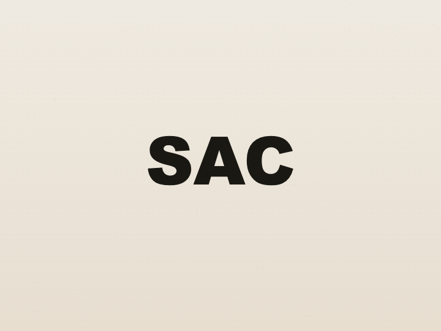
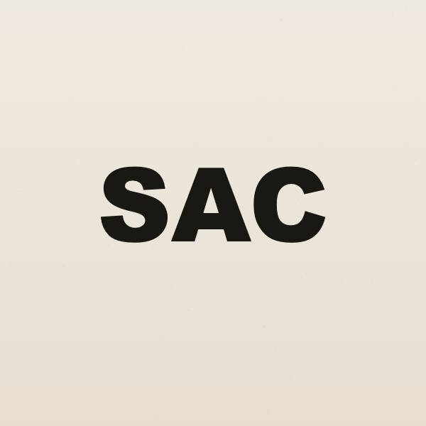
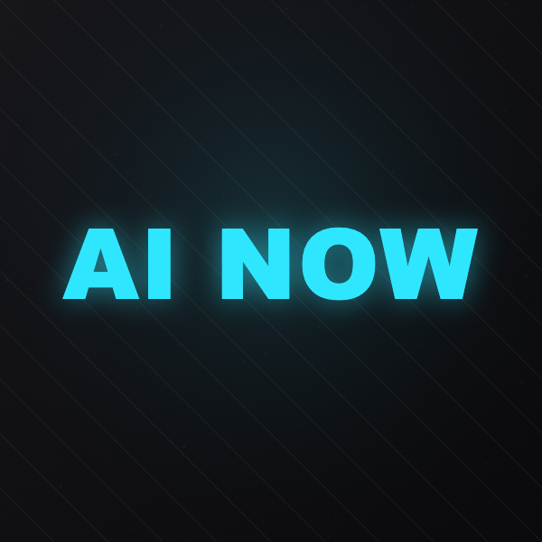
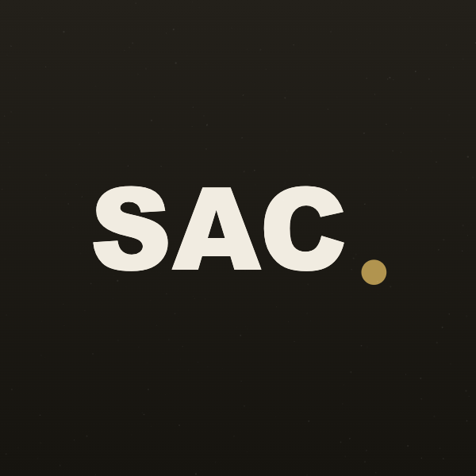
速くなった分の時間は、ツネハシ タケシ — AI Creative Director
もっと深く人を観るために使う.
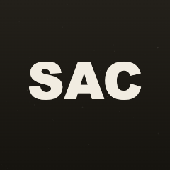
色・間・温度・被写体の方向性を、生成前に言葉で固めます。
誰が・何が・どの画角か。カメラ的な語彙で具体的に。
シネマティック／フィルムグレインなど作家性を言語化。
逆光・ゴールデンアワー等。光が雰囲気の8割を決めます。
気に入った1枚のseedを固定し、語を1つずつ変えて検証。
最後に介入レイヤーを挟み、ブランドの温度に寄せます。
夕暮れのビル屋上に立つ人物、ローアングル、 シネマティックな実写、35mm、f1.4、浅い被写界深度、 逆光のゴールデンアワー、フィルムグレイン、繊細な肌の質感、 高解像度、--ar 16:9 --style raw
| 項目 | Tool A | Tool B | Tool C |
|---|---|---|---|
| 得意な表現 | シネマ実写 | イラスト全般 | 商用ストック |
| 学習コスト | 中 | 低 | 低 |
| 商用利用 | 可 | 可 | 可 |
| 細部の制御 | 高 | 中 | 中 |
| 向いている人 | 映像・広告 | 個人・SNS | 事業・量産 |
| 標準納品形式 | ProRes 422 / H.264 |
|---|---|
| 解像度 | 3840×2160（4K） |
| 標準尺 | 15s / 30s / 60s |
本テンプレートのモジュールは、CMS上で選択・入力・並び替えが可能です。
本記事は2026年6月時点の情報に基づきます。各ツールの仕様・規約は変更される場合があります。
営業ではなく、まず対話から。企画段階のご相談を歓迎します。